Survival Analysis FS
Contents
Survival Analysis FS#
Import Libraries#
# Code source: Gaël Varoquaux
# Andreas Müller
# Modified for documentation by Jaques Grobler
# License: BSD 3 clause
import seaborn as sns
import numpy as np
import xgboost as xgb
import matplotlib.pyplot as plt
from matplotlib.colors import ListedColormap, LinearSegmentedColormap
from matplotlib.lines import Line2D
from sklearn.model_selection import train_test_split
from sklearn.model_selection import GridSearchCV
from sklearn.preprocessing import StandardScaler
from sklearn.pipeline import make_pipeline
from sklearn.metrics import roc_auc_score
from sklearn.ensemble import RandomForestClassifier, AdaBoostClassifier
from sklearn.discriminant_analysis import QuadraticDiscriminantAnalysis
from sklearn.gaussian_process import GaussianProcessClassifier
from sklearn.linear_model import LogisticRegression
from sklearn.neighbors import KNeighborsClassifier
from sklearn.gaussian_process.kernels import RBF
from sklearn.neural_network import MLPClassifier
from sklearn.tree import DecisionTreeClassifier
from sklearn.naive_bayes import GaussianNB
from sklearn.svm import SVC
from sklearn.inspection import DecisionBoundaryDisplay
sns.set_theme(style='white')
Load Datasets#
input_path = '../Data/'
output_path = '../Data/'
import pandas as pd
x_train = pd.read_pickle(input_path+'embedding.pkl')
x_test = pd.read_pickle(input_path+'embedding_test.pkl')
y = pd.read_csv(input_path+'y.csv', index_col=0)
y_train = y[~y['Clinical Trial'].isin(['AML02','AML08'])]
y_train = y_train[y_train['os.evnt'].notnull()]
y_test = y[y['Clinical Trial'].isin(['AML02','AML08'])]
# Select samples in x that are in y_train
x_train = x_train.loc[y_train.index].to_numpy()
x_test = x_test.loc[y_test.index].to_numpy()
y_test.shape, y_train.shape
((204, 296), (1093, 296))
Hyperparameter Tuning by GridSearch#
Nearest Neighbors#
parameters = {
'n_neighbors': [2, 5, 7, 8, 10],
'algorithm': ['auto', 'ball_tree', 'kd_tree', 'brute']
}
estimator = KNeighborsClassifier()
grid_search = GridSearchCV(
estimator=estimator,
param_grid=parameters,
scoring = 'roc_auc',
n_jobs = -1,
cv = 10,
verbose=True
)
grid_search.fit(x_train,y_train['os.evnt'])
model = grid_search.best_estimator_.fit(x_train,y_train['os.evnt'])
knn = grid_search.best_estimator_
Fitting 10 folds for each of 20 candidates, totalling 200 fits
grid_search.best_estimator_
KNeighborsClassifier(n_neighbors=10)In a Jupyter environment, please rerun this cell to show the HTML representation or trust the notebook.
On GitHub, the HTML representation is unable to render, please try loading this page with nbviewer.org.
KNeighborsClassifier(n_neighbors=10)
Radial Basis Function (RBF) SVM#
parameters = {
'C': [0.1,1, 10, 100],
'gamma': [1,0.1,0.01,0.001],
}
estimator = SVC()
grid_search = GridSearchCV(
estimator=estimator,
param_grid=parameters,
scoring = 'roc_auc',
n_jobs = -1,
cv = 10,
verbose=True
)
grid_search.fit(x_train,y_train['os.evnt'])
model = grid_search.best_estimator_.fit(x_train,y_train['os.evnt'])
rbf_svm = grid_search.best_estimator_
Fitting 10 folds for each of 16 candidates, totalling 160 fits
grid_search.best_estimator_
SVC(C=0.1, gamma=0.1)In a Jupyter environment, please rerun this cell to show the HTML representation or trust the notebook.
On GitHub, the HTML representation is unable to render, please try loading this page with nbviewer.org.
SVC(C=0.1, gamma=0.1)
Gaussian Process#
parameters = {
'max_iter_predict': [100, 200, 500, 1000]
}
estimator = GaussianProcessClassifier()
grid_search = GridSearchCV(
estimator=estimator,
param_grid=parameters,
scoring = 'roc_auc',
n_jobs = -1,
cv = 10,
verbose=True
)
grid_search.fit(x_train,y_train['os.evnt'])
model = grid_search.best_estimator_.fit(x_train,y_train['os.evnt'])
best_model = model # Put this wherever you want
gpc = grid_search.best_estimator_
Fitting 10 folds for each of 4 candidates, totalling 40 fits
grid_search.best_estimator_
GaussianProcessClassifier()In a Jupyter environment, please rerun this cell to show the HTML representation or trust the notebook.
On GitHub, the HTML representation is unable to render, please try loading this page with nbviewer.org.
GaussianProcessClassifier()
Random Forest#
parameters = {
'bootstrap': [True, False],
'min_samples_leaf': [1, 2, 4],
'min_samples_split': [2, 5, 10],
'n_estimators': [200, 400]
}
estimator = RandomForestClassifier()
grid_search = GridSearchCV(
estimator=estimator,
param_grid=parameters,
scoring = 'roc_auc',
n_jobs = -1,
cv = 10,
verbose=True
)
grid_search.fit(x_train,y_train['os.evnt'])
model = grid_search.best_estimator_.fit(x_train,y_train['os.evnt'])
rfc = grid_search.best_estimator_
Fitting 10 folds for each of 36 candidates, totalling 360 fits
grid_search.best_estimator_
RandomForestClassifier(min_samples_leaf=4, min_samples_split=10,
n_estimators=200)In a Jupyter environment, please rerun this cell to show the HTML representation or trust the notebook. On GitHub, the HTML representation is unable to render, please try loading this page with nbviewer.org.
RandomForestClassifier(min_samples_leaf=4, min_samples_split=10,
n_estimators=200)Neural Net#
parameters = {
'hidden_layer_sizes': [(100,), (200,), (50,), (100, 50,)],
'activation': ['logistic', 'tanh', 'relu'],
'alpha': [0.0001, 0.001],
'batch_size': [32, 64, 100],
'max_iter': [500, 1000],
}
estimator = MLPClassifier()
grid_search = GridSearchCV(
estimator=estimator,
param_grid=parameters,
scoring = 'roc_auc',
n_jobs = -1,
cv = 10,
verbose=True
)
grid_search.fit(x_train,y_train['os.evnt'])
model = grid_search.best_estimator_.fit(x_train,y_train['os.evnt'])
mlp = grid_search.best_estimator_
Fitting 10 folds for each of 144 candidates, totalling 1440 fits
grid_search.best_estimator_
MLPClassifier(activation='tanh', batch_size=32, hidden_layer_sizes=(100, 50),
max_iter=500)In a Jupyter environment, please rerun this cell to show the HTML representation or trust the notebook. On GitHub, the HTML representation is unable to render, please try loading this page with nbviewer.org.
MLPClassifier(activation='tanh', batch_size=32, hidden_layer_sizes=(100, 50),
max_iter=500)Naive Bayes#
parameters = {
'var_smoothing': [1e-10, 1e-9, 1e-8, 1e-5]
}
estimator = GaussianNB()
grid_search = GridSearchCV(
estimator=estimator,
param_grid=parameters,
scoring = 'roc_auc',
n_jobs = -1,
cv = 10,
verbose=True
)
grid_search.fit(x_train,y_train['os.evnt'])
model = grid_search.best_estimator_.fit(x_train,y_train['os.evnt'])
nb = grid_search.best_estimator_
Fitting 10 folds for each of 4 candidates, totalling 40 fits
grid_search.best_estimator_
GaussianNB(var_smoothing=1e-10)In a Jupyter environment, please rerun this cell to show the HTML representation or trust the notebook.
On GitHub, the HTML representation is unable to render, please try loading this page with nbviewer.org.
GaussianNB(var_smoothing=1e-10)
Quadratic Discriminant Analysis#
parameters = {
'reg_param': [0.0, 0.1, 0.2, 0.3, 0.5],
'store_covariance': ['true', 'false'],
'tol': [1e-4, 1e-2, 1, 10]
}
estimator = QuadraticDiscriminantAnalysis()
grid_search = GridSearchCV(
estimator=estimator,
param_grid=parameters,
scoring = 'roc_auc',
n_jobs = -1,
cv = 10,
verbose=True
)
grid_search.fit(x_train,y_train['os.evnt'])
model = grid_search.best_estimator_.fit(x_train,y_train['os.evnt'])
qda = grid_search.best_estimator_
Fitting 10 folds for each of 40 candidates, totalling 400 fits
grid_search.best_estimator_
QuadraticDiscriminantAnalysis(store_covariance='true')In a Jupyter environment, please rerun this cell to show the HTML representation or trust the notebook.
On GitHub, the HTML representation is unable to render, please try loading this page with nbviewer.org.
QuadraticDiscriminantAnalysis(store_covariance='true')
XGBoost#
parameters = {
'reg_alpha': [1e-5, 1e-2, 0.1, 1, 100],
'max_depth': range(2, 6, 10),
'n_estimators': range(60, 220, 40),
'learning_rate': [0.1, 0.01, 0.05],
'gamma': [0, 0.25, 1, 10]
}
estimator = xgb.XGBClassifier(objective='binary:logistic', seed=42, n_jobs=-1)
grid_search = GridSearchCV(
estimator=estimator,
param_grid=parameters,
scoring = 'roc_auc',
n_jobs = -1,
cv = 10,
verbose=True
)
grid_search.fit(x_train,y_train['os.evnt'])
model = grid_search.best_estimator_.fit(x_train,y_train['os.evnt'])
xgb = grid_search.best_estimator_
Fitting 10 folds for each of 240 candidates, totalling 2400 fits
grid_search.best_estimator_
XGBClassifier(base_score=0.5, booster='gbtree', callbacks=None,
colsample_bylevel=1, colsample_bynode=1, colsample_bytree=1,
early_stopping_rounds=None, enable_categorical=False,
eval_metric=None, gamma=0.25, gpu_id=-1, grow_policy='depthwise',
importance_type=None, interaction_constraints='',
learning_rate=0.1, max_bin=256, max_cat_to_onehot=4,
max_delta_step=0, max_depth=2, max_leaves=0, min_child_weight=1,
missing=nan, monotone_constraints='()', n_estimators=140,
n_jobs=-1, num_parallel_tree=1, predictor='auto', random_state=42,
reg_alpha=1, reg_lambda=1, ...)In a Jupyter environment, please rerun this cell to show the HTML representation or trust the notebook. On GitHub, the HTML representation is unable to render, please try loading this page with nbviewer.org.
XGBClassifier(base_score=0.5, booster='gbtree', callbacks=None,
colsample_bylevel=1, colsample_bynode=1, colsample_bytree=1,
early_stopping_rounds=None, enable_categorical=False,
eval_metric=None, gamma=0.25, gpu_id=-1, grow_policy='depthwise',
importance_type=None, interaction_constraints='',
learning_rate=0.1, max_bin=256, max_cat_to_onehot=4,
max_delta_step=0, max_depth=2, max_leaves=0, min_child_weight=1,
missing=nan, monotone_constraints='()', n_estimators=140,
n_jobs=-1, num_parallel_tree=1, predictor='auto', random_state=42,
reg_alpha=1, reg_lambda=1, ...)Logistic Regression#
parameters = {
'tol': [1e-4, 1e-2, 1, 10],
'C': [0.5, 1.0, 1.5],
'max_iter': [100, 200],
'multi_class': ['auto', 'ovr', 'multinomial'],
'class_weight': ['balanced', None],
}
estimator = LogisticRegression(random_state=42, n_jobs=-1)
grid_search = GridSearchCV(
estimator=estimator,
param_grid=parameters,
scoring = 'roc_auc',
n_jobs = -1,
cv = 10,
verbose=True
)
grid_search.fit(x_train,y_train['os.evnt'])
model = grid_search.best_estimator_.fit(x_train,y_train['os.evnt'])
lr = grid_search.best_estimator_
Fitting 10 folds for each of 144 candidates, totalling 1440 fits
grid_search.best_estimator_
LogisticRegression(C=0.5, n_jobs=-1, random_state=42, tol=10)In a Jupyter environment, please rerun this cell to show the HTML representation or trust the notebook.
On GitHub, the HTML representation is unable to render, please try loading this page with nbviewer.org.
LogisticRegression(C=0.5, n_jobs=-1, random_state=42, tol=10)
Define Classifiers#
XGBoost#
parameters = {
'reg_alpha': [1e-5, 1e-2, 0.1, 1, 100],
'max_depth': range (2, 6, 10),
'n_estimators': range(60, 220, 40),
'learning_rate': [0.1, 0.01, 0.05],
'gamma': [0, 0.25, 1, 10]
}
estimator = xgb.XGBClassifier(objective='binary:logistic', seed=42, n_jobs=-1)
grid_search = GridSearchCV(
estimator=estimator,
param_grid=parameters,
scoring = 'roc_auc',
cv = 5,
n_jobs=-1,
verbose=True
)
grid_search.fit(x_train,y_train['os.evnt'])
model = grid_search.best_estimator_.fit(x_train,y_train['os.evnt'])
xgboost = grid_search.best_estimator_
print('COG OS ROC AUC: %.3f ' % (model.score(x_train,y_train['os.evnt'])))
print('StJude OS ROC AUC: %.3f ' % (model.score(x_test,y_test['os.evnt'])))
Fitting 5 folds for each of 240 candidates, totalling 1200 fits
COG OS ROC AUC: 0.767
StJude OS ROC AUC: 0.676
names = [
"Nearest Neighbors",
"Linear SVM",
"RBF SVM",
"Gaussian Process",
"Random Forest",
"Neural Net",
"Naive Bayes",
"QDA",
"XGBoost",
"Logistic Regression"
]
classifiers = [
KNeighborsClassifier(3),
SVC(kernel="linear", C=0.025),
SVC(gamma=2, C=1),
GaussianProcessClassifier(random_state=42, n_jobs=-1),
RandomForestClassifier(max_depth=5, n_estimators=10, max_features=1),
MLPClassifier(activation='tanh', alpha=0.001, batch_size=100,
hidden_layer_sizes=(50,), max_iter=1000),
GaussianNB(),
QuadraticDiscriminantAnalysis(),
xgboost,
LogisticRegression()
]
Plot classifiers#
cm_bright = ListedColormap(['#1f77b4', '#ff7f0e'])
#cm = LinearSegmentedColormap.from_list("", ['#1f77b4', '#ff7f0e'])
cm = ListedColormap(['#1f77b4', '#ff7f0e'])
ax = plt.subplot()
# Plot the training points
ax.scatter(x_train[:, 0], x_train[:, 1], c=y_train["os.evnt"], cmap=cm_bright, edgecolors="k", s=30)
# Plot the testing points
ax.scatter(
x_test[:, 0], x_test[:, 1], c=y_test["os.evnt"], cmap=cm_bright, alpha=0.6, edgecolors="k", s=30
)
# Set Legend
custom_lines = [Line2D([0], [0], color='#1f77b4', lw=4),
Line2D([0], [0], color='#ff7f0e', lw=4)]
ax.legend(custom_lines, ['Alive', 'Dead'])
ax.set_xticks(())
ax.set_yticks(())
ax.set_title("Input Data")
plt.tight_layout()
plt.show()
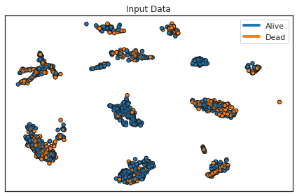
for name, clf in zip(names, classifiers):
ax = plt.subplot()
x_min, x_max = x_train[:, 0].min() - 0.5, x_train[:, 0].max() + 0.5
y_min, y_max = x_test[:, 1].min() - 0.5, x_test[:, 1].max() + 0.5
# Test classifier
clf.fit(x_train, y_train['os.evnt'])
train_pred = clf.predict(x_train)
train_score = roc_auc_score(y_train['os.evnt'], train_pred)
test_pred = clf.predict(x_test)
test_score = roc_auc_score(y_test['os.evnt'], test_pred)
DecisionBoundaryDisplay.from_estimator(
clf, x_train, cmap=cm, alpha=0.4, ax=ax, eps=0.5
)
sns.scatterplot(data=x_train, x=x_train[:, 0], y=x_train[:, 1], s=30, legend='full',
hue=y_train['os.evnt'], linewidth=0.5, alpha=1, ax=ax,edgecolor='k')
sns.scatterplot(data=x_test, x=x_test[:, 0], y=x_test[:, 1], s=30, legend='full',
linewidth=0.5, ax=ax,edgecolor='k', alpha=0.6, hue=y_test['os.evnt'])
# Set Legend
custom_lines = [Line2D([0], [0], color='#1f77b4', lw=4),
Line2D([0], [0], color='#ff7f0e', lw=4)]
ax.legend(custom_lines, ['Alive', 'Dead'])
ax.set_xticks(())
ax.set_yticks(())
ax.set_title(name)
ax.annotate(text = f'Train ROC AUC: {train_score:.2f}\nTest ROC AUC: {test_score:.2f}',
xy=(x_min+1.25, y_min + 4.5), xycoords='data',
ha='left', va='center', fontsize=11,
bbox={'boxstyle': 'round', 'facecolor': 'white',
'edgecolor': 'lightgray', 'alpha': 0.6})
ax.set_xlim(x_min, x_max)
ax.set_ylim(y_min, y_max)
plt.tight_layout()
plt.savefig('../Figures/Classifiers/' + name + '_Classifier.png',
bbox_inches='tight', dpi=300)
plt.show()
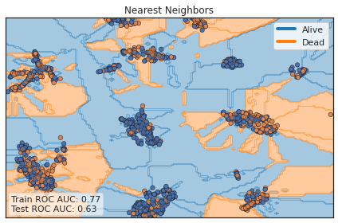
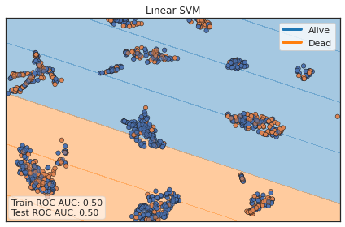
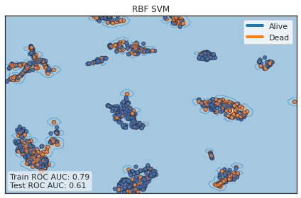
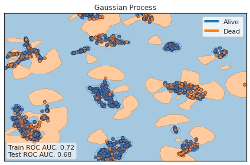
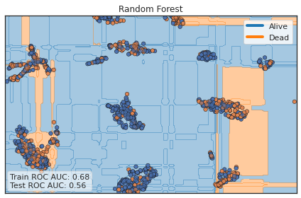
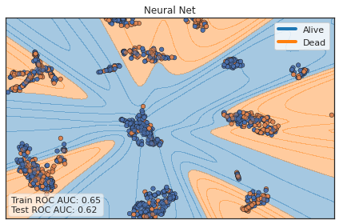
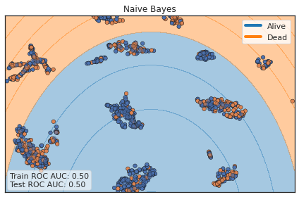
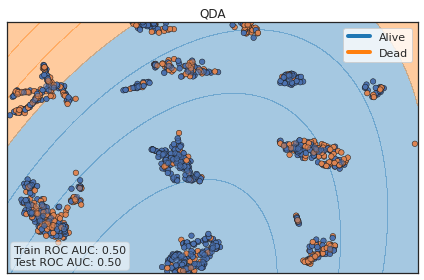
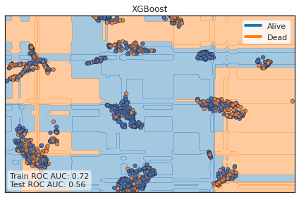
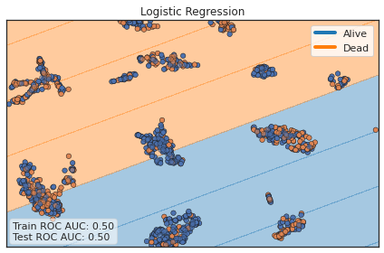